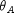
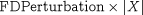
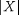
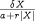
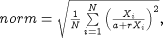
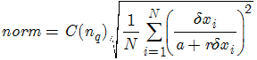
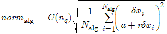
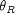
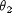

InitialisationNLSolver: A quoted string specifying a nonlinear algebraic equation solver.
The solver to be used for the solution of nonlinear algebraic equations occurring at the initialisation stage of the integration. This can be either one of the standard gPROMS nonlinear algebraic equation solvers or a third-party nonlinear algebraic equation solver (see the gPROMS System Programmer Guide). The default is BDNLSOL. This parameter can be followed by further specifications aimed at configuring the particular solver by setting values to its own algorithmic parameters.
LASolver: A quoted string specifying a linear algebraic equation solver.
The solver to be used for the solution of linear algebraic equations at each step of the integration. This can be either one of the standard gPROMS linear algebraic equation solvers or a third-party linear algebraic equation solver (see the gPROMS System Programmer Guide). The default is MA48. This parameter can be followed by further specifications aimed at configuring the particular solver by setting values to its own algorithmic parameters.
ReinitialisationNLSolver: A quoted string specifying a nonlinear algebraic equation solver.
The solver to be used for the solution of nonlinear algebraic equations that is necessary for re-initialisation following discontinuities. This can be either one of the standard gPROMS nonlinear algebraic equation solvers or a third-party nonlinear algebraic equation solver (see the gPROMS System Programmer Guide). The default is BDNLSOL. This parameter can be followed by further specifications aimed at configuring the particular solver by setting values to its own algorithmic parameters.
Absolute1stTimeDerivativeThreshold: A real number in the range [0, 1010].
Unless this parameter has the value zero, it represents the value  in the condition used to determine reporting of potential 'runaway' derivatives.
If it is zero (the default), no runaway derivatives will be reported.
AbsolutePerturbationFactor: A real number in the range [10-20, 1010]; default = 10-7.
Absolute perturbation factor for varied trajectories and second-order sensitivities.
AbsoluteTolerance: A real number in the range [10-20, 1010].
The absolute integration tolerance. Together with the parameter RelativeTolerance (see below), they determine whether or not a time step taken by the solver is sufficiently accurate.
Diag: A boolean value.
Specifies whether very detailed diagnostic information is to be generated during integration.
EffectiveZero: A real number in the range [10-20, 1010].
The magnitude of a variable below which absolute rather than relative finite difference perturbation is used -- see parameter FDPerturbation below.
EventTolerance: A real number in the range [10-20, 1010].
The event tolerance, i.e. the maximum time interval within which discontinuities during integration are located.
FDPerturbation: A real number in the range [10-20, 1010].
Finite difference perturbation factor. If finite difference calculation of partial derivatives with respect to a variable X is required, X is perturbed by:

unless  is less than EffectiveZero, in which case it is perturbed by FDPerturbation.
FiniteDifferences: A boolean value; default = FALSE.
Controls whether second-order sensitivities are calculated via finite differences (TRUE) or within the BDF code (FALSE).
HigherOrderBiasFactor: A real number in the range [0.001, 1000].
The factor B used in the tests which the integrator makes periodically to determine whether to change the order of
integration within DASOLV. Giving this factor a value greater than 1 will "bias" the integrator towards using higher order steps. This has been
found to result in quicker solution for many problems (see also MinimumRatioForOrderDecrease).
This test is of the form
IF r_up*B > r_sm AND r_up*B > r_dn THEN
Raise integration order
END
Where:
-
r_upis the ratio which DASOLV will apply to the step if it increases the order by 1,
-
r_smis the ratio which DASOLV will apply to the step if it keeps the order the same,
-
r_dnis the ratio which DASOLV will apply to the step if it decreases the order by 1.
LocalTruncationErrorControl: A boolean value; default = TRUE.
Controls whether local truncation error control is carried out (TRUE) or not (FALSE).
LowerOrderBiasFactor: A real number in the range [0.0, 109].
The factor C used in the tests which the integrator makes periodically to determine whether to reduce the order of
integration within DASOLV. Giving this factor a value greater than zero will "bias" the integrator towards reducing the step. This has been found
to result in quicker solution for many problems (see also HigherOrderBiasFactor and MinimumRatioForOrderDecrease).
This test is of the form
IF r_dn*C > r_sm AND r_dn*C > r_up AND r_sm < F THEN
Reduce integration order
END
Where:
-
r_upis the ratio which DASOLV will apply to the step if it increases the order by 1,
-
r_smis the ratio which DASOLV will apply to the step if it keeps the order the same,
-
r_dnis the ratio which DASOLV will apply to the step if it decreases the order by 1.
-
Fis the MinimumRatioForOrderDecrease.
MaxCorrectorIterations: An integer number in the range [1,50].
The maximum number of corrector iterations to allow on a single attempt to solve the system (i.e. before declaring a corrector failure).
MaximumListedVariablesForNormContributions: An integer between 0 and 1000; default = 5.
On rare occasions, DASOLV fails with a "corrector step failure" message. Similarly, it can reject an integration step with the message “Rejecting integration step due to error test failure”. These indicate that the code is unable to establish a set of variable values that satisfy the system equations with a given accuracy at a particular point. They are often caused by errors or bad scaling in some modelling equations which results in either the corrector iterations taking excessively large steps in some of the variables or the time-step size being too large to satisfy the required accuracy.
To help with the diagnosis of such problems, DASOLV can do two things. First, it can report the variables with the largest relative change at each corrector iteration. The relative change for a variable X is defined as:

where:
-
 is the step in the variable at this corrector iteration;
is the step in the variable at this corrector iteration; -
a is the absolute tolerance;
-
r is the relative tolerance.
Second, it can report the variables that contributed most to the error norm that has caused the error-test failure. In this case, the relative change for variable X is defined as:
where:
-
is the step in the variable at this corrector iteration;
-
a is the absolute tolerance;
-
r is the relative tolerance.
The parameter MaximumListedVariablesForNormContributions specifies the number of variables to be reported in this manner. Note that such reporting takes place only if the parameter OutputLevel is set to a value of 3 or higher(for largest corrector step) and 2 or higher (for error-norm contributions).
An example of the output is shown below:
Variables with largest (weighted) corrector steps follow... Differential and algebraic variables (norm = 227.542): ---------------------------------------------------------------------------------------------------------------------------------- | Variable | Name | Current Value | Corrector Step | Weighted Corrector Step | Contribution to Norm | ---------------------------------------------------------------------------------------------------------------------------------- | 1 | Plant.Reactor.STR.rho_L | 12126 | 548.071 | 4519.44 | 50.00% | | 2 | Plant.Reactor.STR.c(5) | 12126 | 548.071 | 4519.44 | 50.00% | | 3 | Plant.Reactor.STR.vol_L | 0.000824675 | -3.72737E-05 | -3.7243 | 0.00% | | 4 | Plant.Reactor.STR.q_Loss | 0.00692394 | -6.05969E-06 | -0.601802 | 0.00% | | 5 | Plant.Reactor.STR.ThermoHL.hli(2) | -5.12137E-10 | -1.41695E-06 | -0.141695 | 0.00% | ---------------------------------------------------------------------------------------------------------------------------------- Algebraic variables only (norm = 250.308): ---------------------------------------------------------------------------------------------------------------------------------- | Variable | Name | Current Value | Corrector Step | Weighted Corrector Step | Contribution to Norm | ---------------------------------------------------------------------------------------------------------------------------------- | 1 | Plant.Reactor.STR.rho_L | 12126 | 548.071 | 4519.44 | 50.00% | | 2 | Plant.Reactor.STR.c(5) | 12126 | 548.071 | 4519.44 | 50.00% | | 3 | Plant.Reactor.STR.vol_L | 0.000824675 | -3.72737E-05 | -3.7243 | 0.00% | | 4 | Plant.Reactor.STR.q_Loss | 0.00692394 | -6.05969E-06 | -0.601802 | 0.00% | | 5 | Plant.Reactor.STR.ThermoHL.hli(2) | -5.12137E-10 | -1.41695E-06 | -0.141695 | 0.00% | ----------------------------------------------------------------------------------------------------------------------------------
The output is grouped in terms of differential and algebraic Variables and only algebraic Variables. In each case, a norm value is also reported. For differential and algebraic variables, this is defined by:

where N is the number of equations. Subsequent lines list the largest
VariablesWithLargestCorrectorSteps Variables and their relative changes.
For algebraic Variables only, then norm is similarly defined:

where Nalg is the number of algebraic Variables and the summation is over only the algebraic Variables. Again, a list of the algebraic variables with the largest corrector steps then follows.
MaxStepSize: A real number in the range [1e-20,1e100].
The maximum step size the integrator is allowed to take.
MaxSuccessiveCorrectorFailures: An integer number in the range [1,100].
The maximum number of successive corrector failures to allow before declaring an integration failure.
MinimumRatioForOrderDecrease: A real number in the range [0.0, 109].
The factor F used in the tests which the integrator makes periodically to determine whether to reduce the order of
integration within DASOLV. Giving this factor a value greater than zero will "bias" the integrator against reducing the step. This has been found
to result in quicker solution for many problems (see also HigherOrderBiasFactor) - in particular, setting the value to 1.0 will ensure that the
order is not reduced unless the step itself is being reduced, which often proves beneficial.
This test is of the form
IF r_dn > r_sm AND r_dn > r_up AND r_sm < F THEN
Reduce integration order
END
Where:
-
r_upis the ratio which DASOLV will apply to the step if it increases the order by 1,
-
r_smis the ratio which DASOLV will apply to the step if it keeps the order the same,
-
r_dnis the ratio which DASOLV will apply to the step if it decreases the order by 1.
OutputLevel: An integer in the range [-1, 7].
The amount of information generated by the solver. The following table indicates the lowest level at which different types of information are produced:
| 0 | (None) |
| 1 | (Re-)initialisation times, projection of predictor onto bounds, variables hitting bounds |
| 2 | Successful initialisation, change of branch in IF conditional equations, location of discontinuities, step failures, repeated convergence failures, predictor outside bounds, predictor step reduction, variables stuck on bounds |
| 3 | Detail of convergence failures, values of derivatives on commencing integration, number of perturbation groups, step length reduction due to bounds violation |
| 4 | Variable causing discontinuity, detail of perturbation groups |
| 5 | Entry to main integrator routines, all error test values, nonfatal singularities during integration, greatest changes in variables at each corrector iteration |
| 6 | Convergence values at every corrector iteration, step change factors |
| 7 | Time, step, variables, derivatives and residuals at every corrector iteration |
When OutputLevel is 3 or more, gPROMS reports the norms for differential and algebraic Variables, as shown in the example below.
Norm values ... differential and algebraic variables: 2.19219E-005 ... algebraic variables only: 2.19607E-005
These norms are calculated using the following equations.

where:
-
C(nq) are constants depending on the on the order of the step
-
N is the number of equations
-
δxi is the step in the variable i at this corrector iteration
-
a and r are the absolute and relative tolerances
For algebraic Variables only, the norm is calculated by:

where Nalg is the number of algebraic variables and the summation is performed over only the Nalg algebraic variables.
Relative1stTimeDerivativeThreshold: A real number in the range [0, 1010].
Represents the value  in the condition used to determine reporting of potential ``runaway'' derivatives.
Relative2ndTimeDerivativeThreshold: A real number in the range [0, 1010].
Represents the value  in the conditions used to determine reporting of potential ``runaway'' derivatives.
RelativePerturbationFactor: A real number in the range [10-20, 1010]; default = 10-4.
Relative perturbation factor for varied trajectories and second-order sensitivities.
RelativeTolerance: A real number in the range [10-20, 1010]; default = 10-5.
The relative integration tolerance. Together with the parameter AbsoluteTolerance (see above), they determine whether or not a time step taken by the solver is sufficiently accurate.
SenErr: A boolean value.
For optimisation type activities: specifies whether the sensitivity error test is to be applied at each step of the integration.